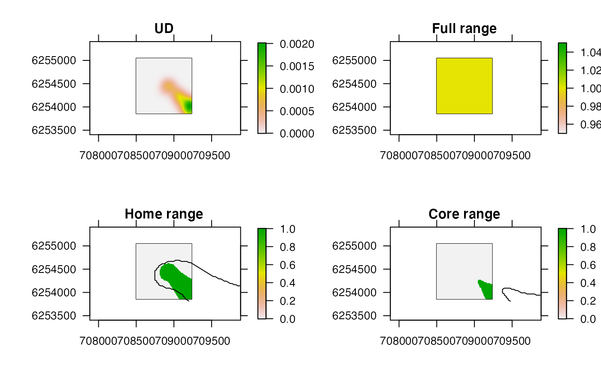
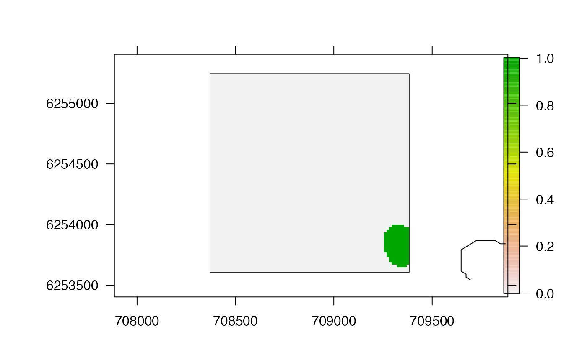
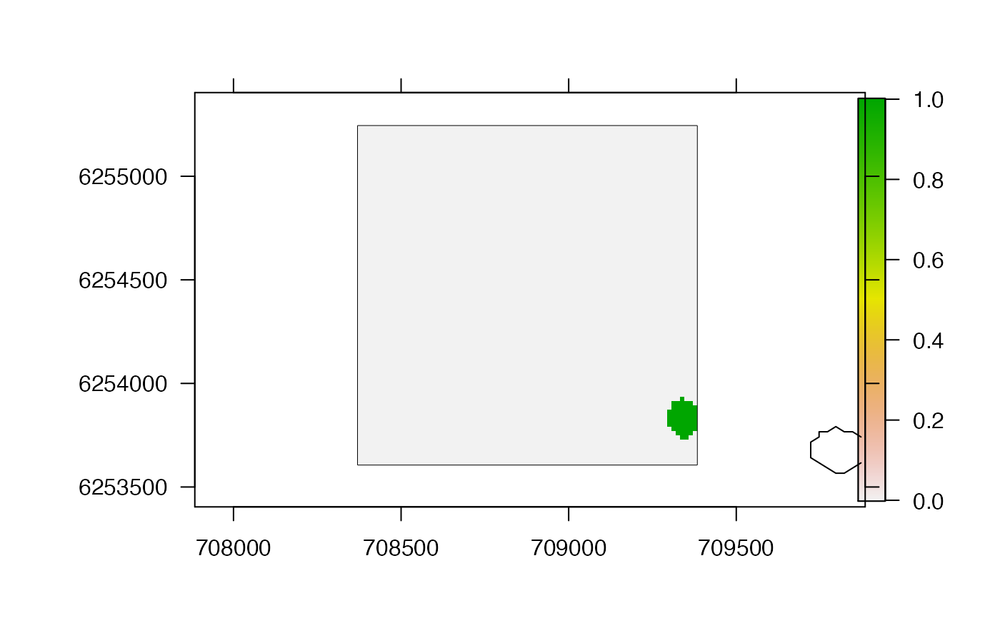
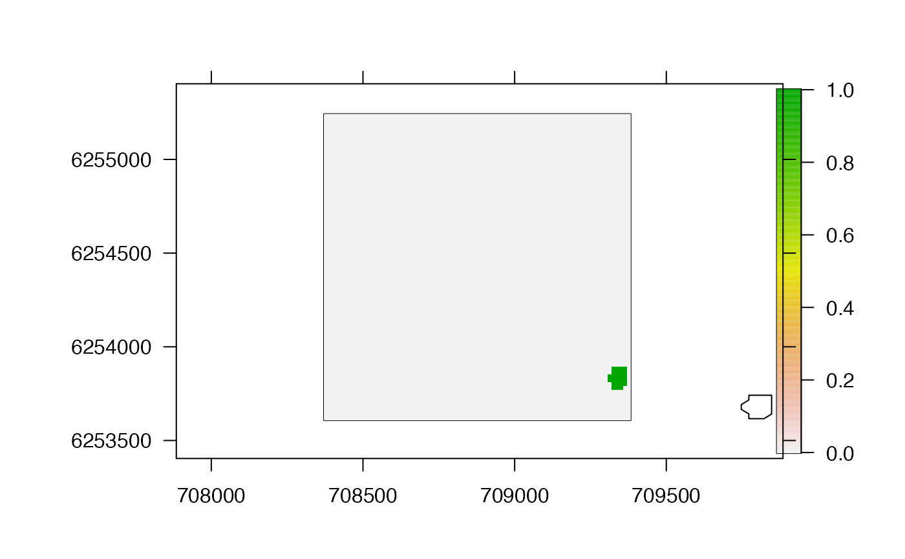

These functions extract `home range' estimates from raster objects that describe the intensity of movements within an area (from example from pf_kud).
get_hr_prop( x, prop = 0.5, plot = TRUE, add_raster = list(), add_contour = list(), ... ) get_hr_core(x, plot = TRUE, add_raster = list(), add_contour = list(), ...) get_hr_home(x, plot = TRUE, add_raster = list(), add_contour = list(), ...) get_hr_full(x, plot = TRUE, add_raster = list(), add_contour = list(), ...)
| x | A |
|---|---|
| prop | For |
| plot | A logical variable that defines whether or not to plot the home range. |
| add_raster, add_contour, ... | Plot customisation options. |
The functions return a raster. Cells with a value of one are inside the specified range boundaries; cells with a value of zero are beyond range boundaries.
Animal home ranges are widely quantified as `the smallest subregion that accounts for a specified proportion, p, of [the animal's] total distribution' (Jennrich and Turner 1969, page 232). In line with this approach, get_hr_prop extracts the region within a frequency distribution of space use (i.e., UD) that is enclosed by a specified proportion (prop) contour. Following the most widely used adopted conventions, three additional wrapper functions facilitate the extraction of core, home and full ranges:
get_hr_core extracts the `core range' as the region enclosed by the 50 percent contour of the UD (prop = 0.50);
get_hr_home extracts the `home range' as the 95 percent contour of the UD (prop = 0.95);
get_hr_full extracts the `full' range as the boundaries of the UD (prop = 1.00);
These functions are simple wrappers for raster.vol. They differ from functions in the adehabitatHR package (namely getverticeshr) in that they are designed to input and output raster objects.
Jennrich, R. I. and Turner, F. B. (1969). Measurement of non-circular home range. Journal of Theoretical Biology, 22, 227--237.
Edward Lavender
#### Define an example UD # We will use particles sampled by a particle filtering algorithm # ... to create a UD: particles <- pf_simplify(dat_dcpf_histories, summarise_pr = max, return = "archive")#> flapper::pf_simplify() called (@ 2022-06-17 10:04:18)... #> ... Getting pairwise cell movements based on calc_distance = 'euclid'... #> ... ... Stepping through time steps to join coordinate pairs... #> ... ... Identifying connected cells... #> ... ... Processing connected cells for return = 'archive'... #> ... flapper::pf_simplify() call completed (@ 2022-06-17 10:04:18) after ~0 minutes.# Define grids for UD estimation map <- dat_dcpf_histories$args$bathy habitat <- kud_habitat(map, plot = FALSE) # Define UD as a raster ud <- pf_kud_2(particles, bathy = map, grid = habitat, estimate_ud = kud_around_coastline, plot = FALSE)#> flapper::pf_kud_2() called (@ 2022-06-17 10:04:18)... #> ... Setting up function...#>#> ... Processing sampled locations... #> ... Implementing KUD estimation... #> ... Processing KUD(s)... #> ... Plotting KUD... #> ... flapper::pf_kud_2() call completed (@ 2022-06-17 10:04:18) after ~0 minutes.#### Plot UD and home range estimators pp <- par(mfrow = c(2, 2)) prettyGraphics::pretty_map(add_rasters = list(x = ud), main = "UD")#>get_hr_full(ud, main = "Full range")#>#>#> Warning: all z values are equalget_hr_home(ud, main = "Home range")#>get_hr_core(ud, main = "Core range")#>#>get_hr_prop(ud, prop = 0.10)#>get_hr_prop(ud, prop = 0.05)#>